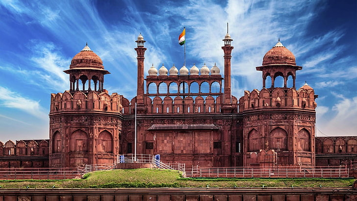

some picture
state and their capitals
| state | capital | founded date |
| andhra pradesh | amaravati | 1 nov 1956 |
| arunachal pradesh | itanagar | 20 feb 1987 |
| assam | dispur | 26 jan 1950 |
| bihar | patna | 26 jan 1950 |
| chattisgarh | raipur | 1 nov 2000 |
| goa | panaji | 30 may 1987 |
| gujarat | gandhinagar | 1 may 1960 |
| haryana | chandigarh | 1 nov 1966 |
| pradesh | shimla | 25 jan 1971 |
| jharkhand | ranchi | 15 nov 2000 |
| karnataka | bengaluru | 1 nov 1956 |
| kerala | thiruvananthapuram | 1 nov 1956 |
| madhya pradesh | bhopal | 1 nov 1956 |
| maharashtra | mumbai | 1 may 1960 |
| manipur | imphal | 21 jan 1972 |
| meghalaya | shilong | 21 jan 1972 |
| mizoram | aizawl | 20 feb 1987 |
| nagaland | kohima | 1 dec 1963 |
| odisha | bhubaneswar | 26 jan 1950 |
| punjab | chandigarh | 1 nov 1956 |
| rajasthan | jaipur | 1 nov 1956 |
| sikkim | gangtok | 16 may 1975 |
| tamil nadu | chennai | 26 jan 1950 |
| telangana | hyderabad | 2 june 2014 |
| tripura | agartala | 21 jan 1972 |
| uttar pradesh | lucknow | 26 jan 1950 |
| uttarakhand | dehradun [ winrer ] gairsain [ summer ] |
9 nov 2000 |
| west bengal | kolkata | 1 now 1956 |